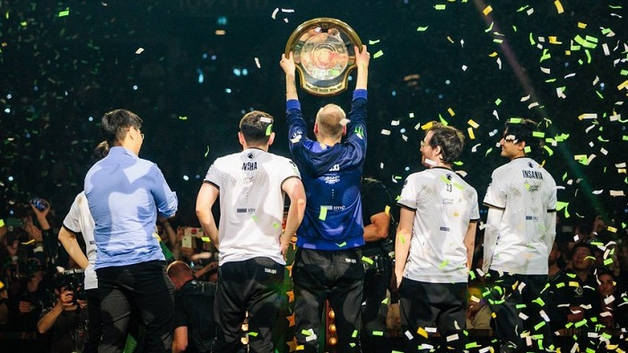

Team Liquid обыграла Gaimin Gladiators в гранд-финале The International 2024 по Dota 2.

Матч закончился со счетом 3:0. За победу команда получила более $1,1 млн.
За второе место GG заработали ~$359 тыс. Третью строчку заняла Tundra Esports — коллектив Ивана Pure~ Москаленко получил ~$230 тыс. На четвертом месте расположилась Team Falcons и заработала ~$154 тыс.
За второе место GG заработали ~$359 тыс. Третью строчку заняла Tundra Esports — коллектив Ивана Pure~ Москаленко получил ~$230 тыс. На четвертом месте расположилась Team Falcons и заработала ~$154 тыс.